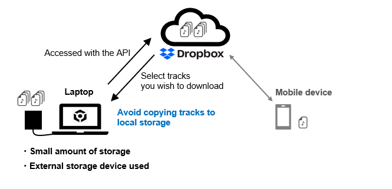
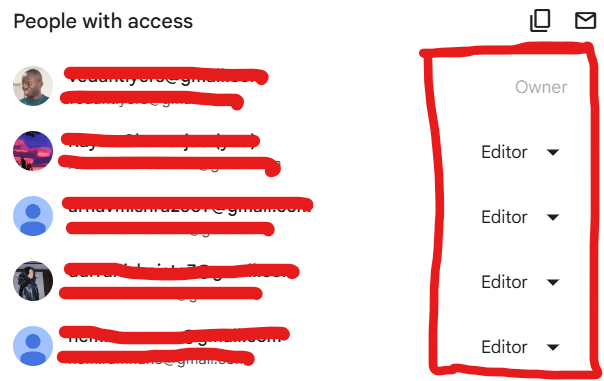

Cloud services synchronise files across multiple devices in real time. This enables seamless transitions between school, home, and mobile work environments.
While syncing increases accessibility, it also introduces potential complications such as version conflicts or duplicate files. Understanding sync indicators and update statuses prevents confusion.
Cloud systems should mirror organisational structure used locally. Consistency reduces mental switching between environments.

Sharing Permissions
Cloud platforms allow users to share files with varying levels of access: view, comment, or edit. Granting full editing rights unnecessarily may result in unintended modifications.
Oversharing increases security risks. Public links can circulate beyond intended audiences. Sensitive documents should be shared selectively, with restricted permissions and expiration settings when available.
Responsible sharing protects intellectual property and personal information. Professional environments require discretion.

Module Assessment
Question 1
You are sharing a project file. What should you choose?
Question 2
A student edits a document on their laptop and later opens it on their tablet. The newest version appears automatically. What feature allows this?
Question 3
Why is synchronisation useful?
Question 4
You share a document with classmates but only want them to read it. Which permission should you select?
Question 5
What risk occurs when a file is shared publicly online?
Question 6
A shared group document suddenly changes unexpectedly. What likely caused this?
Question 7
Which strategy reduces the risk of oversharing?
Question 8
A cloud folder becomes cluttered with random files. What should you do?
Question 9
Which device can typically access cloud files?
Question 10
You are submitting an assignment through a shared link. What should you confirm before sending it?